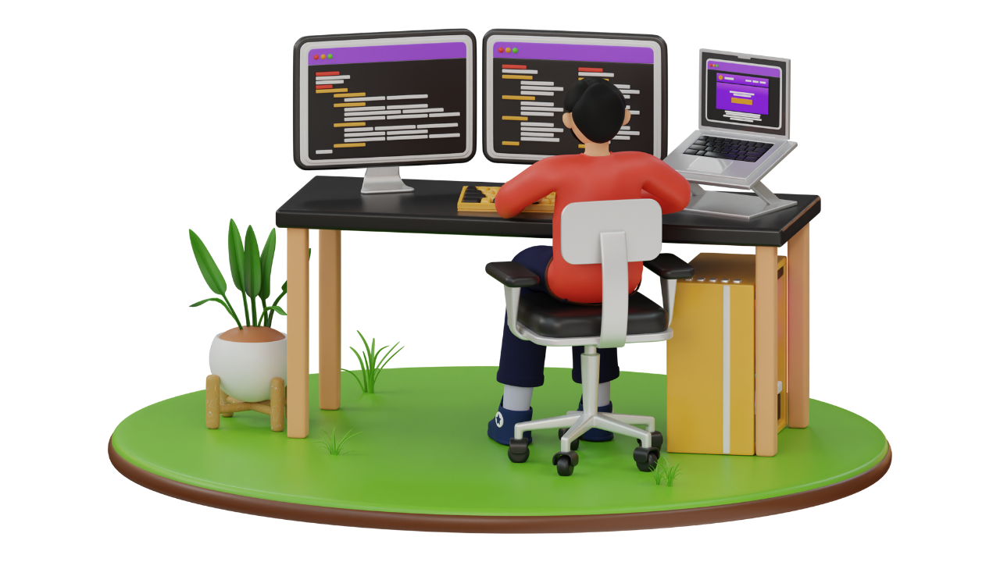

CODE. CREATE. GO BEYOND.
Building
what’s next.
I’m Ramachandran. I turn complex ideas into intuitive digital experiences — from the first pixel to the final line of Python.
A curious mind.
A builder’s instinct.

HELLO, I’M RAM ↗Great experiences happen where creativity meets engineering.
I’m a Python full-stack developer who enjoys connecting the dots between design and functionality. I build responsive interfaces and the server-side systems that bring them to life.
My approach is simple: understand the problem, sweat the details, and create something that feels effortless to use.
More about me on LinkedIn ↗Ideas, brought
to life.
A selection of websites and experiments.
Different challenges. The same attention to detail.
Skiez Technologies
A digital presence for a technology-driven business.
David Security & Manpower
A clear, accessible home for essential services.
Small scripts.
Big possibilities.
A collection of Python projects exploring practical solutions through code.
Explore the repository ↗Creative on the front.
Logical at the core.
The tools I use to bridge
an idea and a working experience.
Interface & experience
HTML / CSS / JavaScript / Bootstrap
Behind the scenes
Python / SQL / MongoDB
The creative layer
Photoshop / Responsive design
HAVE AN IDEA IN MIND?